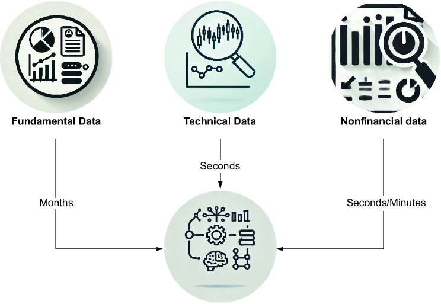
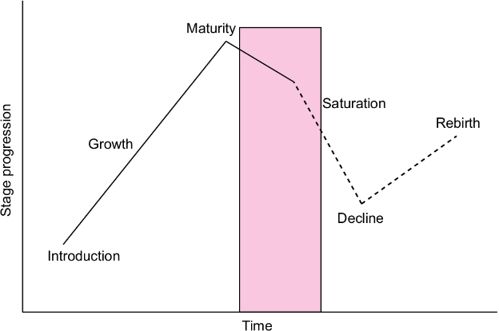
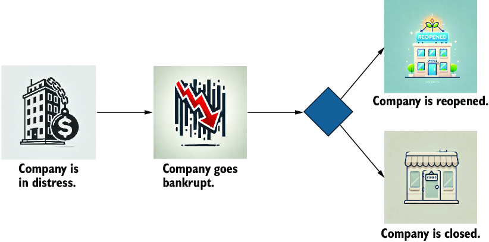
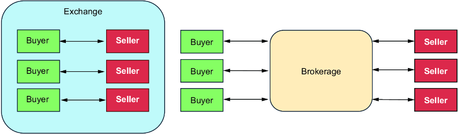

Now that you’ve mastered technical analysis with charts, this chapter introduces algorithms for trading strategies, transforming raw insights into actions. This step is the culmination of everything we’ve covered: collecting data, analyzing ratios and charts, assessing risks, and integrating machine learning (ML) and large language models (LLMs). We’ll bring it all together and outline scenarios for applying it.
Various scenarios affect trading strategies. Some algorithms perform better in bull markets than bear markets, or vice versa. Catalysts are specific moments that signal more volatility in the market, which can be an opportunity or risk. We’ll review catalysts from a trading perspective.
In the third part of this chapter, we’ll demonstrate how to place orders programmatically using Interactive Brokers and Alpaca. We’ll explore different order types, parameters, and their implications, learning how to apply them effectively.
In chapter 3, we categorized data for financial analysis. In chapters 4 and 5, we conducted ad hoc research to build portfolios. Then, we showed how to monitor our portfolio, explored ML and LLM applications, and analyzed charts. As shown in figure 11.1, three data sources, including their update frequencies, are used to create data models and algorithms for trading decisions. The efficient market theory says that an asset price represents the knowledge of all investors, and therefore, individual investors can’t beat the market in the long run. But what if we get insights that nobody else or only a few investors have? We won’t likely find these hidden gems of knowledge in fundamental or technical data, as investors have tried to explore financial data for decades. Let’s focus on the nonfinancial data, as this category is the newest source for insights, and not everyone might have explored all possibilities.

Let’s explore how much data has changed the investment approach to understand how nonfinancial data has added a new flavor to investment and trading strategies. Many investors have read about investment basics from books about Warren Buffett, who often refers to his mentor, Benjamin Graham, as the father of sophisticated investment techniques. If we read classic books by Graham such as Security Analysis or The Intelligent Investor, we can imagine a young Warren Buffett getting his information from newspapers and seeing him and his partner, Charlie Munger, making deals in person with other investors in the pre-information age. We can hardly imagine an investment legend such as Warren Buffett in front of a Bloomberg terminal studying data or exploring Python scripts using an Integrated Development Environment (IDE).
Films such as Wall Street or The Big Short can also influence perceptions of the investment profession. These films feature computers already in use for trading. Many documentaries and movies also illustrate an era when the internet was a game changer, allowing us to respond to fast-moving signals that would have taken earlier investors significantly more time to uncover.
The time between Warren Buffett’s early years (think of investing without computers) and trading stocks around the financial crisis in 2008 (think of investors looking at a screen at green or red charts) shows how digitalization changed for investors. What may be less obvious is how much has changed since the early information age. In the millennium years, it was unimaginable that one person’s statement in the media could cause share prices in the world to fall or rise by more than 10%.
The effect on share prices after President Donald Trump changed US tariff policies has confronted everyone with a new reality: data originating outside the world of finance—social media posts can, after all, be collected in real time and added to trading algorithms as a decision factor—sometimes affects share prices more than financial data. In the future, we might screen social media for significant messages like we study charts for investment decisions.
Social media data is just one subcategory of the generic nonfinancial data category. Let’s explore more categories of nonfinancial data to help us gain insights about possible share price movements. When exploring different categories of nonfinancial data, we’ll discover that one difference between financial and nonfinancial data is that different categories of nonfinancial data sources have different relevance for various sectors and industries. Social media data is, in most cases, more relevant to consumer-oriented companies than companies that focus on business-to-business (B2B) solutions. This separates nonfinancial from financial data sources because the latter includes sources that everyone must provide. In other words, serious investors might skip social media analysis but not numbers in the balance sheets.
Beyond fundamentals and technicalities, additional data sources will broaden our perspective on asset investability. This exploration leads to many different data sources and use cases, which we can group by sectors and industries. They are more complex to use than the data that is available out of the box. An overview of the possibilities of enriching data models with financial data can still be beneficial, as access to rare data in a treasury may be the differentiator that determines profit or loss.
Investment management company Renaissance Technologies (RenTech) started collecting data early, which may be one reason for its success. Still, we shouldn’t collect data for the sake of collecting data. We need to develop an investment thesis, and once we’ve explored all the fundamentals, we need to consider what additional information is required to validate our thesis. Next, we examine how to obtain the data.
We can hypothesize that Google’s share price will soar in the upcoming years due to Waymo. Some may even speculate that Waymo’s success will affect Google like the iPhone did Apple. We can read up on articles stating that Waymo could become a cash cow. But articles are just one-time opinions. We need to find data sources that prove the growing importance of Waymo:
Let’s see how we can collect this information. The sections are intended to give you some ideas on how to add specific details to your models. In some cases, this also means investing in external data sources, as many insights might not be available through free data sources.
We get most of the media information from the web. We can collect information from various sources, such as social media, traditional media, and blog posts, using crawlers and APIs. We can also transcribe video data to text.
We can learn more about trends using a vast pool of information on Waymo: Is Waymo mentioned more often over time? In what context is Waymo mentioned? How positive was the mood when people talked about Waymo? Are the deployments to new cities on time?
Note Human emotions are a category of nonfinancial data. The CBOE Volatility Index (VIX) is a popular measure of the stock market’s expectation of volatility based on S&P 500 index options. There are many engaging scenarios matching sentiments in the media with price changes from that index.
We can use geolocation and movement data to explore what is happening in an area. Using satellite and webcam images, we can count objects, such as different car brands on the streets, if we have computer vision skills. Knowing the growth rate of Waymo cars in certain areas will give us additional insights into their overall success.
You might wonder if collecting and analyzing “exotic data” is worth the additional effort. Even with the vast amount of satellite data available, running computer vision algorithms and training models to identify specific objects correctly requires significantly more effort than exploring mainstream data.
The efficient market theory says that the share prices of one company represent the total information available to all investors. Engineers who find ways to collect and analyze data not available to everyone may have a way to get a competitive advantage as investors. Never underestimate the value of “underrepresented” data.
Demographic data tells you about the demands of a population. As a long-term investor, you see more demand for hearing aids than for skateboards if statistics tell you that the population in an area is aging.
The demand for Waymo services may follow demographic developments. Autonomous driving can be popular with teenagers who aren’t allowed to drive themselves, and it can even be an incentive for them to postpone a driver’s license if they start using robotaxis. Think also about handicapped and older adults who might face challenges driving themselves.
One core thesis is that using robotaxis is part of a mindset shift, and that we can detect this mindset shift in people. If we evaluate the data, we can gain insight into the behavior of target groups.
In finance, a catalyst is a trigger that propels the price of a stock dramatically up or down. Earning reports, new analyst ratings on stocks, product announcements, legislative changes, lawsuits, mergers and acquisitions, bankruptcy declarations, and the involvement of activist investors are good examples.
A catalyst is an opportunity to buy or sell positions when we expect the share price to change more than usual. Anyone interested in quantitative or algorithmic trading may focus on specific catalysts and build models specifically created for them.
Nothing lasts forever, and everything with a beginning also has an end. In business as in life, growth is followed by maturity, saturation, and eventually decline. Some see the cycle of life and rebirth even as a philosophical principle far beyond business. One principle is that, in the end, everything is just a transformation. Figure 11.2 outlines a business life cycle with multiple phases. Imagine a company that has a stunning product idea. As it enters the market, many customers want to own that product, and this company grows and reaches maturity.

Many companies face competitors over time unless they have a strong economic moat. New rivals enter the market, and at some point, the sales growth of key products starts to slow down. Everyone is clear that without a new hit, the company will be unable to keep up with its past performance.
Some companies may lack the resources to revive themselves in a market saturated with competitors. Maybe they’ve lost too much money to have a proper R&D budget for the next big thing in their products and services. In the corporate world, mergers and acquisitions (M&A) are one strategy to prevent decline if you don’t have enough resources to reinvent yourself. The executives may see a chance for an early revival by joining forces with another company, either by merging or by acquisition.
The idea of a merger is 1 + 1 = 3; that is, the combined entity with all possible synergies is more potent than the sum of its parts. By merging two companies with complementary products, they expand their offerings and streamline operations. An acquisition is more one-sided: a larger company absorbs a smaller one, integrating it into its structure, for example, Microsoft acquiring GitHub while keeping it distinct within its corporate structure.
For investors, M&A events represent both opportunities and risks. When a company is announced to be acquired, its stock price often surges, benefiting existing shareholders. If two public companies merge, investors might see long-term value creation. Most mergers look excellent on paper, but what happens when two distinct corporate cultures, operational systems, and management styles clash? What if employees resist the integration? Not all M&As deliver the expected value; some even destroy shareholder wealth instead of creating it.
Note An investor might assume that the executives will prevent a merger if they believe a cultural mismatch exists. For some executives, an exit is a successful end of an era, and all the troubles will be passed on to a successor. Therefore, whether all executives involved in a merger or acquisition always have altruistic goals in mind is doubtful.
We can build models that focus on M&As and try to determine the key parameters that indicate success or failure. In the preceding section, we talked about nonfinancial data. Many data sources tell us if an M&A is successful. We can, for instance, analyze sentiment data in blog posts and comments. We might find the insights we need if we can access data from LinkedIn, Glassdoor, or other providers of employees’ sentiment.
“Cigar butt investing” is an investment strategy famously associated with Warren Buffett’s early years, inspired by his mentor Benjamin Graham. It’s like finding a discarded cigar on the ground, taking one last free puff, and throwing it away. It’s a hazardous approach, and Warren Buffett abandoned it. Still, there’s an opportunity to make money.
You need to find cheap, discarded assets. You look for deeply undervalued companies, often ignored or struggling, but still have some potential. You buy the stock at a deep discount, wait for a slight rebound, and then sell at a profit. Once the market recognizes the company’s fair value and the stock price rises slightly, sell it before its deeper problems surface.
This strategy is like hacking together an old repository to get a quick fix—it can work, but it’s risky, inefficient, and not a long-term plan. You look for companies that are close to bankruptcy and explore all the data to find out if there’s a way this company can be bought or rebound. Figure 11.3 shows the workflow of a company in distress. The later an investor gets involved, the more risk they face.

You can look for companies that filed for bankruptcy. Some may have a stalking horse agreement, which is a binding purchase agreement between a seller (often in bankruptcy or financial distress) and an initial bidder. This agreement sets the floor price and terms for an asset sale in a competitive bidding process, ensuring the asset isn’t sold for too little. Many shareholders might want to liquidate their positions because of a bankruptcy, fearing they could lose everything. If you believe that a company in distress is interesting enough and that competitors are interested in acquiring it, you can buy when the share price is at its bottom and try your luck. Just be aware that this can go wrong, even with intensive research, and you might lose these assets completely.
WARNING You’ll find some examples of companies that went bankrupt yet managed a turnaround, generating huge gains for risk-taking investors. Just keep in mind, these cases are rare—in most bankruptcies, equity is wiped out as creditors assume ownership.
Every company has quarterly earnings calls, during which executives discuss the past quarter. Depending on the company, stocks can move quite a lot. The central question is whether the company met its earnings expectations. If so, how big was the surprise, positive or negative? Executives might also discuss many topics during earnings calls besides earnings. Taking the transcript of an earnings call and running a sentiment analysis can be insightful.
One way to prepare for earnings calls is to start researching a few days before. For example, you should explore when executives last acquired or sold their shares, which could indicate a possible move. You can also find many online reports about new or closed deals of that company to predict an earnings surprise, which refers to diverging from the expected earnings.
One question is whether to trigger an order during an earnings call or beforehand. You can imagine that some investors might listen to the call for insights on prepared orders to buy and sell; when a message indicates possible price movements, they will place an order. So, if you have a strong intuition, you can buy or sell in advance.
The COVID-19 pandemic was a game changer on the stock market. The shares of many companies fell rapidly. There were notable exceptions, however. Examining biotech companies such as Moderna and Pfizer reveals significant profits, as evidenced by their share price history.
With every disaster, there are winners and losers. Natural catastrophes, such as wildfires and hurricanes—we’ll see more of them thanks to climate change—may challenge businesses, such as insurance companies. Companies that produce solutions to mitigate catastrophes, such as companies that help with early wildfire detection, will benefit. Wars challenge the economies of countries that are involved, directly or indirectly. Looking at the share prices of Rheinmetall, a German defense industry company, underscores that there are also beneficiaries of wars.
You can generate profits by addressing potential upcoming disasters early. You can use momentum or long-term strategies. To clarify the difference, let’s consider wildfires as an example. As a long-term investor, you buy shares of companies that help prevent or mitigate wildfires. As climate change worsens, new disasters will boost demand for these solutions. With momentum investing, you can short sell insurance stocks before a major catastrophe happens. Predicting disasters is difficult. Any entrepreneur who can develop such an innovative system will likely get even wealthier by selling their services to governments.
The relationship between the federal interest rate and the share prices may be one of new investors’ most overlooked parameters. We can learn a lot from the past. Alan Greenspan was a Federal Reserve (aka Fed) director who aimed to keep the interest rate low. If the federal interest rate is low, companies can borrow money cheaply, leading to more investments and lower unemployment. Side effects of low interest rates can be manias—some might remember the subprime mortgage crisis of 2008, which was partly also triggered by the availability of cheap money, and higher inflation.
The Fed policies around COVID-19 are a good lesson about the effect of interest rates on share prices. Biotech companies focusing on research, such as Moderna, show a clear picture. During COVID, Moderna did well thanks to high earnings, but the interest rates went up to curb inflation. The share prices of capital-intensive companies, including Moderna, struggled after the pandemic.
One strategy is buying capital-intensive shares when interest rates are high but share prices are low. When the Fed lowers interest rates, the shares of capital-intensive companies will likely go up. There’s a big catch, though. Some capital-intensive companies that haven’t secured a stable cash inflow are at risk of bankruptcy during high interest rates.
Note If you’re a freelancer programmer, you might have noticed that you receive more offers on average when interest is low. Companies prefer not to spend money when borrowing is expensive. LLM prompts such as “What is the outlook for freelancers to get new gigs based on the current economic situation, and when will it improve?” can be used for deeper research.
By continuously screening for data spikes—such as shifts in public sentiment or unusual price movements—we can establish rule-based trading strategies:
The key is defining what X and Y are. X and Y must be quantifiable, as an algorithm must determine if the buy or sell event has been reached.
Before hunting for X and Y, let’s first focus on validating results. Any programmer familiar with test-driven development (TDD) understands the importance of defining validation criteria before implementing logic. Even the most sophisticated strategies risk being unreliable or misleading without a solid validation framework.
Backtesting evaluates trading strategies using historical data. Let’s illustrate this concept with an example. In the chapter on technical analysis, we explored moving averages and observed that a simple moving average (SMA) crossover can serve as a buy or sell signal. This strategy involves calculating two SMAs with different time windows based on a stock’s closing price:
Let’s test this strategy with historical prices. To begin, we need generic methods. The first step is adding SMA calculations to a DataFrame of historical prices. As we’ll use SMAs with different time windows within a DataFrame, we must also validate if the SMA with a specific time window has already been added, as shown in the following snippet:
def add_sma(df: pd.DataFrame, lower: int, upper: int) -> pd.DataFrame:
if f'sma_{lower}' not in df.columns:
df[f'sma_{lower}'] = df.Close.rolling(lower).mean()
if f'sma_{upper}' not in df.columns:
df[f'sma_{upper}'] = df.Close.rolling(upper).mean()
return df
Let’s explore the backtesting method shown in Listing 11.1. We pass a DataFrame containing historical data loaded from a yfinance ticker object. Additionally, we specify parameters for the lower and upper periods of the SMAs and the number of shares to trade. We define a Boolean parameter to trigger a buy order on the first trading day to make tests more comparable with other results.
Note In this backtesting strategy, we’ll sell or buy a predefined number of shares. After one signal, we wait for a reverse signal as the following action, and we don’t trigger the same signal twice in a row. We can repeat the same orders in intervals, including short selling for advanced scenarios. We can also adjust the number of shares to trade. But let’s keep things simple.
def backtest(df: pd.DataFrame, lower: int, upper: int, shares : int,
buy_first_day = False) -> pd.DataFrame:
schema={'date': 'datetime64[ns]', 'action': 'str', 'cash_movement':
'float64'}
results = pd.DataFrame(columns=schema.keys()).astype(schema)
if buy_first_day:
results.loc[len(results)] = [df["Date"].iloc[0], "Buy",
df["Close"].iloc[0] * shares * -1]
waiting_for_bear = True
else:
waiting_for_bear = False
for index, row in df.iterrows():
if not waiting_for_bear:
if row[f"sma_{lower}"] > row[f"sma_{upper}"]:
results.loc[len(results)] = [row.Date, "Buy",
row.Close * shares * -1]
waiting_for_bear = True
if waiting_for_bear:
if row[f"sma_{lower}"] < row[f"sma_{upper}"]:
results.loc[len(results)] = [row.Date,
"Sell",
row.Close * shares]
waiting_for_bear = False
if waiting_for_bear:
results.loc[len(results)] = [df["Date"].iloc[-1], "Sell",
df["Close"].iloc[-1] * shares]
return results
Let’s run some tests. We want to use a fixed amount of money in a target currency as a benchmark to compare the performance of different stocks. We calculate the number of stocks to buy from this initial investment sum. The higher the share price, the fewer shares we would buy.
We need a baseline to measure our strategy’s success: the difference between the shares bought on the first day of the plan and those sold on the last day of the strategy. We also need to account for transaction costs. If we spend $1 for one transaction, we can subtract the number of transactions from the total gains of our SMA strategy. If an SMA strategy leads to better results than this, it’s successful.
We’ll execute a test for NVIDIA using $1,000 and calculate 10 years of data. In this first test scenario shown in listing 11.2, we take 10 trading days for a lower SMA window and 20 trading days for the upper time window.
def run_single_backtest(ticker: str, cash, start_date: str, end_date: str,
transaction_costs = 1) -> pd.DataFrame:
df = load_data(ticker, start_date, end_date)
shares = round(cash / df["Close"][0])
print(f"Shares: {shares}. start price: {df["Close"][0]}. end price: "
f"{df["Close"].iloc[-1]}. to beat: {df["Close"].iloc[-1]*shares –
df["Close"][0]*shares –
transaction_costs}")
df = add_sma(df, 10, 20)
res = backtest(df, 10, 20, shares, True)
gain = res['cash_movement'].sum()
gain = gain - transaction_costs * len(res['cash_movement'])
print(f"Gains: {gain})")
return df
results_nvda
= run_single_backtest("NVDA", 1000, "2015-01-01", "2025-01-01")
Looking into the console output, we can buy 2,070 shares on January 1, 2015. We calculate that this leads to a performance to beat of $276,980, which is quite impressive for 10 years. There’s a small caveat, though, that we need to highlight: NVIDIA went through stock splits. This means the initial NVIDIA stocks at the beginning of January 1, 2015, didn’t cost $0.48.
Running this simulation, it turns out that an SMA10/SMA20 crossover strategy is unsuccessful. We would have made $177,960 in 10 years, clearly below $276,980.
Let’s see if we can do better with other time window parameters. To do this, let’s create a DataFrame that provides parameter combinations:
x = pd.DataFrame(np.arange(10, 210, 10)) test_params = pd.merge(x,x,how='cross') test_params.columns = ['sma_lower','sma_upper'] test_params = test_params[test_params.sma_lower < test_params.sma_upper]
We can now adjust the method to run the same test with various time windows, starting with 10 (the lowest) and 200 (the highest). Listing 11.3 shows the same logic as with single runs, just with a for loop in between that uses all configurations.
def run_multiple_backtests(ticker, investment_sum = 1000):
schema={'lower': 'int64', 'upper': 'int64', 'gain': 'float64'}
results = pd.DataFrame(columns=schema.keys()).astype(schema)
df = load_data(ticker, start_date)
shares = round(investment_sum / df["Close"][0])
print(f"Shares: {shares}. start price: {df["Close"][0]}. end price: "
f"{df["Close"].iloc[-1]}. to beat: {df["Close"].iloc[-1]*shares –
df["Close"][0]*shares}")
for n,m in test_params.values:
df = add_sma(df, n, m)
res = backtest(df, n, m, shares)
gain = res['change'].sum()
results.loc[len(results)] = [n, m, gain]
sorted_results = results.sort_values(by='gain', ascending=False)
return sorted_results
ticker = "NVDA"res_nvda = run_multiple_backtests(ticker,
investment_sum = 1000)
res_nvda
While we learned that a setup using SMA10 and SMA20 doesn’t beat the baseline for our initial test, a different setup does. Table 11.1 shows the five best results for NVIDIA. With a maximum of $309,821.27, we can beat the strategy of buying low on the first trading day and selling high later.
|
SMA low window
|
SMA high window
|
Gains ($)
|
|---|---|---|
| 90 |
120 |
309,821.27 |
| 100 |
110 |
301,097.67 |
| 60 |
160 |
300,504.11 |
| 50 |
110 |
298,242.05" |
| 50 |
180 |
297,201.84" |
Let’s test this code with other company data. As we show in table 11.2, this strategy worked four out of five times using the best parameters. Again, there are some uncertainties. If on the first trading day—when the algorithm needs to purchase shares—the share prices were at a peak but were at a low on the selling day, we might have a distorted result.
An SMA crossover strategy doesn’t beat the baseline for every asset. It’s also essential to highlight that, depending on the brokers we use, we might need to adjust the transaction costs per order. One parameter that we haven’t touched at all is taxation. Every time you sell, you create capital appreciation, which can be taxable depending on your residency.
|
Ticker
|
Lower SMA
|
Upper SMA
|
Gain ($)
|
To beat
|
|---|---|---|---|---|
| KO |
100 |
110 |
664 |
1,042 |
| MMM |
120 |
190 |
810 |
310 |
| PFE |
110 |
180 |
1243.55 |
312.55 |
| AAPL |
160 |
170 |
10,136.21 |
9258.81 |
| MSFT |
80 |
140 |
10,240.63 |
9514.61 |
Note If you prefer to code less, you might look at platforms such as WorldQuant BRAIN. These platforms often provide data and a scripting language to define alpha candidates based on logic, such as our if statements in the code. Users can also trigger automated backtests. For some, their approach looks like shooting with cannons at data. From a pool of potential candidates, select well-defined buy and sell conditions and test them until you find conditions that have been successful in the past. Compute or license costs may apply when using these platforms.
In the next section, we’ll also address another detail that can affect the outcome of these backtests. In these backtests, we buy using the close price, but the question is the price we might get. Stock prices are volatile during the day, and there’s always a spread between the ask and bid price, meaning we might not get the theoretically best price.
In the next section, we’ll explore how to buy and sell stocks at a minimum price using limit orders. Before we go into the details of orders, let’s close the topic of algorithmic trading by looking into complex rules.
To illustrate basic algorithmic trading, we used an SMA crossover strategy to find profitable trading signals. Let’s explore alternative trading signals to decide whether to buy or sell shares.
We use two clauses in our Python code to decide whether to buy or sell shares. If we replace if row[f"sma_{lower}"] > row[f"sma_{upper}"] with a method isBuySignal(args), and exchange the clause to sell in the same way, we can host a more complex logic to evaluate buy and sell decisions.
We can screen data for trading signals daily or even in a shorter time. These signals don’t have to be related directly to the company whose shares we trade. We might also evaluate indicators that indicate geopolitical challenges (e.g., if a president announces another round of tariffs, we might be inclined to sell assets that would be affected by it). Let’s define quantifiable trading signals as method declarations as reference examples. These trading signals can also be combined with technical indicators such as the SMA:
def price_movement_score(assets: list) #—If the assets in the parameters move positively, return a buy signal; otherwise, return a sell signal. def keyword_score(channels: list, keywords: list, upper, lower) #—If the score surpasses the upper threshold, buy; if it’s below the lower threshold, sell. def insider_score() #—This calculates a score based on insider trades (institutional investors or executives of a company buying or selling shares). Note Investors trading with cryptocurrency can group cryptocurrency owners by the number of tokens they hold as the blockchain is a public data source that identifies holders with an ID. If traders who own a lot of tokens unstake them, they are likely to sell them, which can be a strong sell signal.
We can collect and combine multiple scores from signals such as the preceding examples via a scorecard for decision-making. The precondition for each score is that it’s quantifiable and comparable with earlier results.
We can experiment with different signal combinations and use backtesting algorithms to see which combination of signals leads to the best results. Of course, we can also collect the signals in an analytical data set, each signal represented in a column, and using historical data, we can run supervised ML algorithms to train the model for good trading strategies. As mentioned, ML algorithms have a high risk of overfitting, and past results don’t always guarantee future results.
Caution Traders need to be aware of potential costs during trading. Slippage is the difference between where the computer signaled the entry and exit for a trade and where actual clients, with actual money, entered and exited the market using the computer’s signals. In addition, transaction costs might add up if we have frequent orders, and we must never forget that there’s a spread for each trade.
We can increase the complexity by using parameters other than trading signals. For instance, we can adjust the number of shares to trade based on decision parameters. If we have a higher risk tolerance, we can allow leverage to buy shares, meaning we would borrow money to execute a transaction and use short-sell strategies.
Entering advanced trading strategies using algorithms can be compared to entering professional boxing and the ability to challenge every fighter without restrictions. With a lot of training, you can win fights and get rich. But otherwise, if you end up a bold lightweight amateur boxer challenging a heavyweight champion, you can have regrets.
Let’s examine orders, as we want to trigger orders automatically using Python. We’ll first discuss the difference between exchanges and brokers, and then we’ll explore the two brokers’ APIs.
Figure 11.4 outlines what we’ve learned so far. Exchanges sell assets. With direct access to an exchange, we can purchase from the source. However, we usually need a broker to execute orders and hold our shares in the stock and bond markets. A stockbroker is an intermediary between investors and exchanges.

Stockbrokers differ by the number of exchanges they support. They will likely support popular US exchanges such as the NYSE or NASDAQ. Most will also support other popular exchanges such as the DAX, London, or Nikkei. But what about emerging markets? Not every broker supports every stock exchange from every country. Conditions might differ for each exchange, which includes data actuality (some data is provided with delays) and fees.
A crypto exchange differs fundamentally from a stock market exchange. For example, following are some characteristics of a stock market exchange:
In contrast, crypto exchanges are mostly private companies, often incorporated in tax havens or jurisdictions with light financial oversight. As a result, individual governments typically can’t enforce the same regulatory protections as they do for public companies. Investor protection is weak: users may have little legal recourse if an exchange misuses customer funds or fails to maintain proper accounting.
Some countries require crypto exchanges to establish local legal entities to serve their citizens (e.g., within the European Union or Japan), introducing a degree of governance and investor protection. However, the risk remains high, particularly for global exchanges that operate in lightly regulated environments. Many investors have lost substantial funds by trusting unregulated platforms or chasing speculative gains.
The core function of a crypto exchange is to provide an online platform that enables the trading of cryptocurrencies. Their APIs handle the following:
Unlike public company stocks, which are listed on a limited number of exchanges, cryptocurrencies are typically available on most major crypto exchanges. This makes them globally liquid but also subject to fragmented regulation and varying levels of operational quality.
Think of the market as an asynchronous system where tasks are queued. You select the execution logic by creating an order object and submitting it. The parameters you pass to that object, such as asking for immediate execution or execution at a specific price, might adjust the performance.
In this section, we look at order types and order modalities, giving you more insights into executing orders so they meet your investment goals. Let’s start with order types.
Orders can be categorized based on their execution triggers, as described in table 11.3. We can either execute them at once or at a specific price.
|
Order type
|
Description
|
|---|---|
| Market order |
A market order is the “just do it now” approach. It tells a system to buy or sell immediately at the current market price. If we had to shape it into a method, we would use a signature such as executeTradeImmediately(ticker, amount) . We pass the ticker and the amount to the system, and the transaction will be executed next. |
| Limit order |
Sometimes, we prefer an order to be executed if a price reaches a certain level. This is the domain of the limit order. In a code analogy, we can see it as executeTradeWhen(price <= targetPrice): If the price reaches the target price threshold, execute the trade. |
| Stop order |
Stop orders, also known as stop-loss orders, help to manage risks. You can create stop orders to protect yourself against losses. They trigger a market order when a price falls below a given level. Translated to code, it would be a method such as triggerTradeWhen(price <= stopPrice). Imagine you hold shares at $100 and are afraid that a catalyst may hit the market and your stock may plummet. If you make a stop-loss order at $90, your stocks will automatically be sold when they fall below $90. |
| Stop-limit order |
A stop-limit order triggers a limit order when a price is reached. As a combination of stop and limit orders, we can define this method as follows: triggerLimitTradeWhenPriceBetween(limitPrice, stopPrice). This order carries a risk that the market may move too quickly, leaving your position unsold. Imagine, like in the stop order example, you hold $100. You can make a stop-limit order with a limit price of $89 and a stop price of $90. If the falls from $91 directly to $88, the sell order wouldn’t be triggered in a stop-limit order. If then the price went up again to $89.50, the order would be triggered. |
| Trailing stop |
Like a self-adjusting algorithm, this order type follows the stock’s price movement by a set margin. If the stock price rises, the stop price adjusts; if the stock falls by a set amount, the order is triggered: adjustStopPriceDynamically(trailAmount). If the price rises, the stop price moves up. If it drops $5 from the peak, it sells. |
Order modalities are parameters for executing orders, as described in table 11.4. They can be parameters for every order type introduced earlier.
|
Order modality
|
Description
|
|---|---|
| Fill or kill (FOK) |
When you’ve bought shares in the past, you might have observed that not all orders are fulfilled at once. Sometimes, you have more than one transaction. The FOK order ensures that the entire order is fulfilled immediately or gets aborted. |
| Good ’til canceled (GTC) |
Orders are usually only valid during a trading day. An order submitted with the GTC modality stays active until it’s executed or canceled manually. GTC orders are especially valuable for stop-loss orders. Combining a stop-loss order with a GTC ensures that you never go below a certain point, protecting yourself from the effects of a market crash. GTC doesn’t mean “forever.” Different brokers set different time limits until a GTC order expires. These expiration time frames are usually between 0 and 90 days after investors placed the orders. Be sure to explore the modalities of your brokers. |
Let’s use Python APIs to execute orders using Interactive Brokers and Alpaca. We examined both brokers in chapter 6, so we won’t explain them again here.
In chapter 6, we mentioned that we needed to start a local application called the Trader Workstation to use a Python API for Interactive Brokers. The Python API connects to this workstation and executes read operations through this application. We can also buy and sell shares through this connection. The following snippet shows the code to connect to the Interactive Broker’s Trader Workstation app:
from ib_insync import * util.startLoop() ib = IB() ib.connect()
Let’s execute orders after connecting to the platform. In the following code, we must pass the parameters about the stock we want to look at to create a contract object:
import pandas as pd
def get_data(market_data):
print(f"Market Data: {market_data.ask}")
print(f"askSize: {market_data.askSize}")
print(f"marketPrice: {market_data.marketPrice()}")
print(f"marketPrice: {market_data.time}")
contract_apple = Stock("AAPL", "SMART", "USD")
market_data = ib.reqMktData(contract_apple)
get_data(market_data)
After that, we collect the market data for the shares. The market data also contains the ask price we must pay to purchase the asset. Remember, there’s always a tiny spread between ask (buying) and bid (selling) prices, as this is how brokers make money.
Finally, it’s also possible to place market orders. Brokers execute market orders using the current market price. Some investors believe that market orders are fine when you need to be fast and expect the price to only go in one direction:
order = MarketOrder(action = "BUY", totalQuantity = 1) trade = ib.placeOrder(contract_apple, order)
A limit order allows an investor to define a minimum cost to buy or sell. In the following code, we execute a limit order with a price of $200. Suppose an investor believes that a share price will fluctuate during the day. In that case, it’s often recommended not to buy at the first possible opportunity but rather to buy at a price that is likely to be good during the trading day:
order = LimitOrder(action = "BUY", totalQuantity = 1, lmtPrice = 200) trade = ib.placeOrder(contract, order)
One detail of how Interactive Brokers tries to differentiate itself from many other brokers is the number of exchanges this broker supports. As a user of Interactive Brokers, you need to be aware that there are also paid subscriptions for premium services. For some markets, you’ll get delayed data without these premium services.
In chapter 6, we introduced Alpaca as a broker. This broker is developer-friendly and has good APIs. We set the client up using the following code to get an object representing your trading account:
from alpaca.trading.client import TradingClient
from alpaca.trading.requests import GetAssetsRequest
k = get_secret("broker.alpaca.key")
s = get_secret("broker.alpaca.secret")
trading_client = TradingClient(k, s, paper=True)
account = trading_client.get_account()
Before we start trading, let’s parse tradable assets on this platform. The following snippets define search parameters to look for US equity on the NASDAQ exchange whose status is active:
from alpaca.trading.enums import AssetClass, AssetExchange, AssetStatus
search_params = GetAssetsRequest(asset_class=AssetClass.US_EQUITY,
exchange=AssetExchange.NASDAQ, status=AssetStatus.ACTIVE)
assets = trading_client.get_all_assets(search_params)
print(f"{len(assets)} found")
Depending on the execution time, you might get different results. When writing this book, this method returns 4,772 tradable stocks.
Note In this code, we use the parameter paper=True. This setting means that trades are executed in Alpaca only on paper. If you were to remove this parameter, you would trade for real.
Let’s find out if a specific stock is tradable by obtaining an asset from the client and then calling the method tradable (when writing this book, NuScale Power Corporation [SMR] was tradable):
trading_asset = trading_client.get_asset("SMR")
if trading_asset.tradable:
print(f'We can trade {asset}.')
To be able to buy shares, let’s find out how much we have to pay per share by getting the asking price. The ask_price is a variable of an object that the client returns:
from alpaca.data import StockHistoricalDataClient from alpaca.data.requests import StockLatestQuoteRequest stock_client = StockHistoricalDataClient(k, s) quote = StockLatestQuoteRequest(symbol_or_symbols="SMR") latest_multisymbol_quotes = stock_client.get_stock_latest_quote(quote) latest_ask_price = latest_multisymbol_quotes[symbol].ask_price print(latest_ask_price)
Let’s look at how to execute a market order to buy or sell an asset at the market price. In the following snippet, we execute it as a FOK as specified with the parameter time_in_force:
from alpaca.trading.requests import OrderRequest
from alpaca.trading.enums import OrderSide, TimeInForce, OrderType
order_request = OrderRequest(
symbol="SMR",
qty = 2,
side = OrderSide.BUY,
type = OrderType.MARKET,
time_in_force = TimeInForce.FOK
)
new_order = trading_client.submit_order(
order_data=order_request
)
We can also trigger limit orders using Alpaca, which allows an investor to set a minimum price for buying or selling. In the following snippet, we add a time_in_force parameter that validates this order until it’s executed or canceled by the user:
from alpaca.trading.requests import LimitOrderRequest
limit_order_data = LimitOrderRequest(
symbol="SMR",
limit_price=8,
notional=2,
side=OrderSide.BUY,
time_in_force=TimeInForce.GTC
)
limit_order = trading_client.submit_order(
order_data=limit_order_data